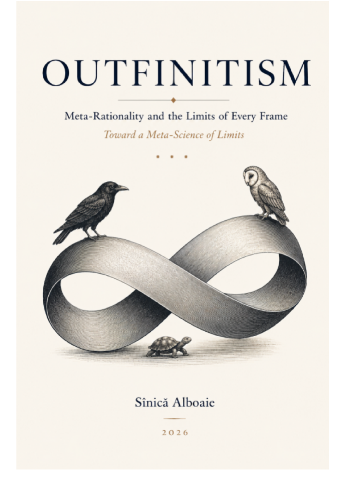

Outfinitist Foundations · Axiologic Research Editions
Outfinitism
Meta-Rationality and the Limits of Every Frame
Enter a world where the most dangerous error is not bad reasoning but good reasoning granted too large a territory. Follow the boundary between model and reality, capability and authority, continuation and excess—and discover why knowing when to stop may be as intelligent as knowing how to proceed.
A philosophy of open ends
Outfinitism begins with the limits of finite human reason. It asks how beliefs, institutions and ambitions can remain corrigible when their models become useful enough to attract power, loyalty and complacency.
The third edition connects that starting point to executable science, civilisation and the right to exist. It does not ask readers to abandon reason; it asks them to make the frame, the frontier and the path of revision visible.
The task is not to possess the final view, but to keep the conditions of revision alive.